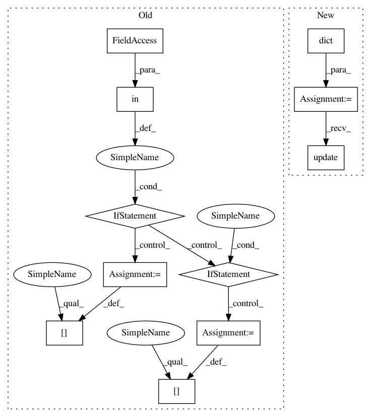

910f6efdd27d489b759a44ccdbb4f5922bcf1b78,lingpy/align/multiple.py,Multiple,lib_align,#Multiple#,991
Before Change
]
kw = {}
for k,d in keys:
if k in keywords and not d:
kw[k] = keywords[k]
elif not d:
kw[k] = rcParams[k]
else:
kw[k] = rcParams[d]
// create a string with the current parameters
params = [
"lib",
kw["model"].name,
kw["mode"],
After Change
// set up the defaults parameters stored in the kw dictionary
kw = dict(
model = rcParams["model"],
mode = rcParams["align_mode"],
modes = rcParams["align_modes"],
scale = rcParams["align_scale"],
factor = rcParams["align_factor"],
tree_calc = rcParams["align_tree_calc"],
restricted_chars = rcParams["restricted_chars"],
classes = rcParams["align_classes"],
sonar = rcParams["align_sonar"],
scorer = rcParams["align_scorer"],
gop = rcParams["align_gop"],
gap_weight = rcParams["align_gap_weight"]
)
kw.update(keywords)
// create a string with the current parameters
params = [
"lib",
In pattern: SUPERPATTERN
Frequency: 4
Non-data size: 11
Instances
Project Name: lingpy/lingpy
Commit Name: 910f6efdd27d489b759a44ccdbb4f5922bcf1b78
Time: 2013-07-20
Author: mattis.list@posteo.de
File Name: lingpy/align/multiple.py
Class Name: Multiple
Method Name: lib_align
Project Name: google/tangent
Commit Name: 31269a5197170026985db35c4703cc6e9c805ebf
Time: 2017-11-10
Author: bart.vanmerrienboer@gmail.com
File Name: tangent/forward_ad.py
Class Name: ForwardAD
Method Name: visit_Call
Project Name: google/tangent
Commit Name: 31269a5197170026985db35c4703cc6e9c805ebf
Time: 2017-11-10
Author: bart.vanmerrienboer@gmail.com
File Name: tangent/reverse_ad.py
Class Name: ReverseAD
Method Name: visit_Call
Project Name: lingpy/lingpy
Commit Name: 910f6efdd27d489b759a44ccdbb4f5922bcf1b78
Time: 2013-07-20
Author: mattis.list@posteo.de
File Name: lingpy/align/multiple.py
Class Name: Multiple
Method Name: prog_align
Project Name: lingpy/lingpy
Commit Name: 910f6efdd27d489b759a44ccdbb4f5922bcf1b78
Time: 2013-07-20
Author: mattis.list@posteo.de
File Name: lingpy/align/multiple.py
Class Name: Multiple
Method Name: lib_align